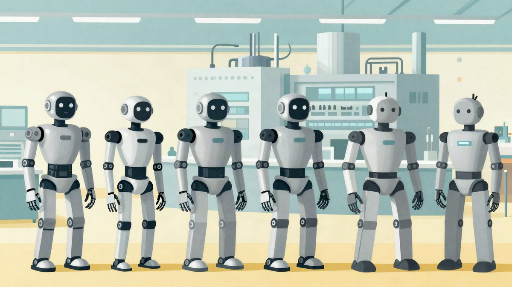

JD Logistics je pustio teretnu dronsku liniju u Xinjiangu: 450 km za 2,5 sata, nosivost 1,9 tone

JD Logistics je u Xinjiangu pustio u rad liniju velikih teretnih dronova između područja Aksu i grada Yecheng. Dronovi nose do 1,9 tone i prelete oko 450 kilometara za 2,5 sata, pa pošiljke stižu sljedeći dan umjesto za 3 do 4 dana. JD tvrdi da je prvi koji je takvu liniju uključio u promociju 11.11.
JD Logistics je ovih dana pustio u rad liniju velikih teretnih dronova u kineskoj regiji Xinjiang. Povezuje područje Aksu s gradom Yecheng. JD tvrdi da su prvi u industriji koji su dronove za regionalni prijevoz uključili u veliku promociju 11.11 (Dan samaca). Jedan let traje 2,5 sata, a pošiljke stižu sljedeći dan.
Do sada je sva roba između dvije lokacije išla cestom preko Ürümqija, gdje se prekrcavala. Kopnena ruta duga je oko 2730 kilometara, a od preuzimanja do dostave obično treba 3 do 4 dana. Dronovi lete izravno, na udaljenosti od oko 450 kilometara. Nosivost je do 1,9 tone, a vrijeme dostave skraćeno je gotovo upola.
Partner i dosadašnje iskustvo
Liniju su zajednički pokrenuli JD Logistics i Tianyu Hangtong, koji se navodno ubraja među najbolje licencirane tvrtke u segmentu velikih dronova. U Xinjiangu samostalno upravlja s 9 aerodroma opće namjene i ima odobreno 9 posebnih dronskih linija.
Suradnja traje od srpnja 2021., kada je prvi let na ruti Tiemenguan-Alar prevezao JD-ove pakete. To je bila prva namjenska linija velikih teretnih dronova u Kini.
Brojke za razdoblje 11.11.
U razdoblju promocije JD-ov proizvod za brzu zračnu dostavu teške robe pokriva gotovo 30.000 gradskih relacija, a na više od 10.000 njih roba stiže sljedeći dan. JD navodi da obećane rokove ispunjava u 95 posto slučajeva.
Uz regionalne linije raste i mreža manjih dronova za zadnju milju. Projekt dostave dronovima u sela u okrugu Zizhong u provinciji Sichuan obuhvaća 131 upravno selo, a najbrži let traje 7 minuta. Navodno je to trenutačno najveća takva mreža u Kini.
JD navodi da kombinacija velikih dronova za prijevoz tereta i malih za dostavu pošiljki povećava učinkovitost preuzimanja za više od 30 posto, a troškove dostave smanjuje za više od 25 posto.
Hoće li se slična usluga nuditi izvan Kine, nije rečeno.
Izvor: MyDrivers (快科技)
Povezani članci
 Tvorac OnlyFakea prvi put govori: lažne iskaznice po 15 dolara i sjevernokorejski IT radnici5. studenoga 2026.
Tvorac OnlyFakea prvi put govori: lažne iskaznice po 15 dolara i sjevernokorejski IT radnici5. studenoga 2026. iPhone Duo: prvi korisnici prijavljuju puknuća zaslona uz šarku na dan prodaje23. listopada 2026.
iPhone Duo: prvi korisnici prijavljuju puknuća zaslona uz šarku na dan prodaje23. listopada 2026.
Musk: Tesla planira "školu" za oko 10.000 Optimus robota, a Terafab prve testne chipove u svibnju i lipnju22. listopada 2026.